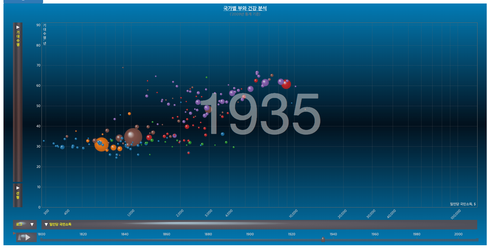

아래 데모는 예산/실적,계층기반을 제외하면, 인포그래픽 or 단순 컴포넌트 입니다.
피라미드 차트 시각화
이진 분석 패턴 처리 용이.
모션 차트 시각화
유명한 모션 차트입니다.
3D기반 차트 시각화
기업 대시보드 및 공공데이터 제공 UI로 안성마춤.
키오스크 및 생산실적 3D 시각화
스마트 팩토리용 정보 제공
(키오스크 용도 추천)
캘린더-뷰 패턴 시각화

특정 년도에 따른 해당 차원(지역,부서,계정,담당자 등)의
월별 및 일별 항목(Measure)분석.
동 데모에서는 20년간 일별 매출 및 주가 데이터 제공
예산/실적 패턴 시각화
예산,계획,목표대비 실적 데이터 분석 용도.
UI/UX 슬라이더
수평,수직 범위 및 단일 값 슬라이더.
(수평 범위만 데모)
Waterfall(or Cascade)
재고,인사,외상 등의 인사이트 제공.(멍텅구리 컴포넌트)
C2i 특징: 그룹 패턴 지원.(전기, 전전기 대비 비교 개념)
색상 선택기
멍텅구리 UI 컴포넌트의 색상 선택기 제공